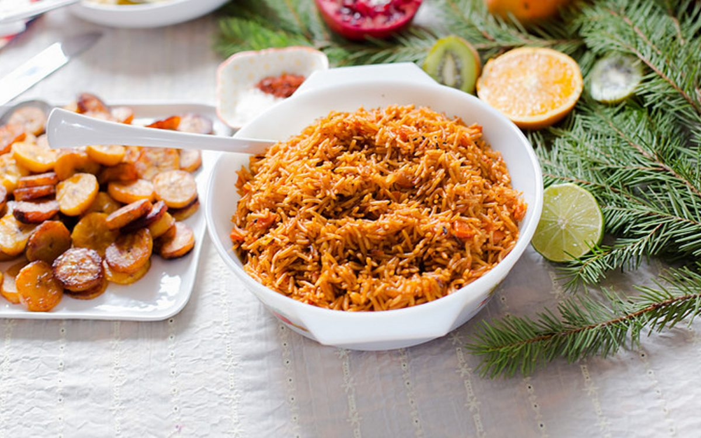

Jollof Rice

West African Rice With Harissa and Baharat
Jollof rice is a beloved West African dish;
delightful and delicious and a favorite at
gatherings and celebrations!
This particular recipe has roasted bell peppers,
which add a succulent depth and sweetness to the
base sauce. It also has harissa, a spicy
chili paste and baharat, a Middle Eastern
spice blend, both of which add warmth, zing and
that touch of smokiness. Serve this one-pot dish
with a side of sweet plantains or your
favorite veggies.
- 4 tablespoons olive oil
- 1 teaspoon ground coriander
- 1/2 teaspoon ground cumin
- 1 large onion, chopped
- 1 28-ounce can whole plum tomatoes
with juice or about 3 cups chopped tomatoes, puréed
- 2-3 bell peppers roasted with 3 garlic cloves and blended
- 2 tablespoons harissa paste
- 1 tablespoon baharat or Ras el hanout
- 1/2 tablespoon smoked paprika
- 2 cups brown basmati rice, rinsed
(regular basmati or parboiled rice will work, too)
- 2 medium carrots, chopped
- 2-3 cups vegetable broth or water
- 1 teaspoon salt (omit or use less for broth with sodium)
- Heat olive oil in a large heavy-bottomed saucepan or Dutch oven over medium-high heat.
- Add coriander and cumin when oil is hot, and fry, stirring occasionally until spices are fragrant, about 1-2 minutes.
- Add onions and sauté for a few minutes until onions start to soften.
- Add tomatoes, bell pepper mixture and harissa paste and cook, stirring frequently for about 5 minutes, the oil should get a slight reddish hue.
- Stir in Baharat or Ras el hanout (if using) and smoked paprika.
- Add rice, stir to coat completely and cook for 3-4 minutes, stirring intermittently.
- Add carrots and vegetable broth (use 2 -2 1/2 cups for firmer chewier rice and up to 3 cups if you prefer softer rice) and salt, stir, and bring to a boil. Check seasoning and add more salt if needed.
- Lower heat, cover and cook until most of the liquid is absorbed, then stir rice again, reduce heat further, and keep covered tightly (use aluminum foil if necessary). Let the steam cook the rice the rest of the way, about 10-15 minutes until rice is cooked through and all the liquid is absorbed.
- Fluff with a slotted ladle and serve with your favorite sides.